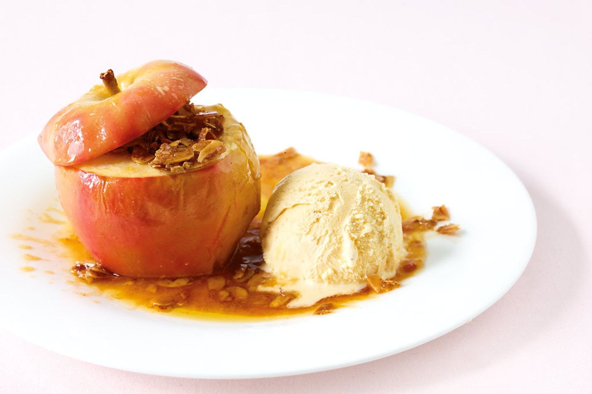
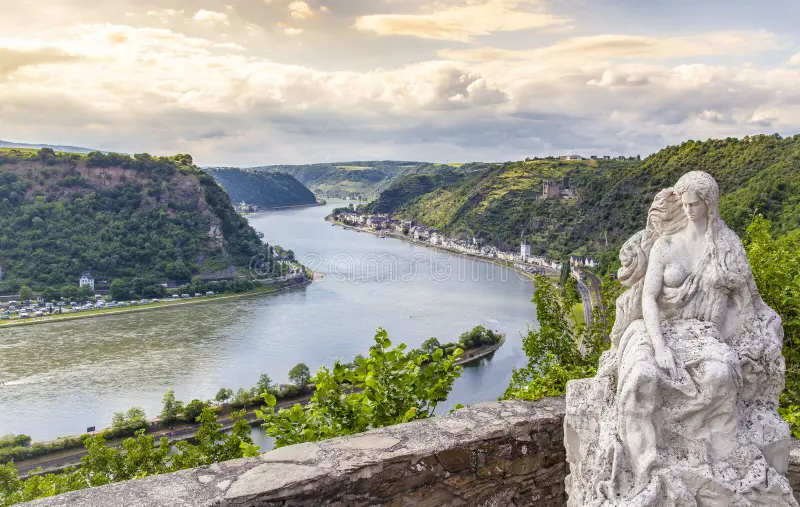
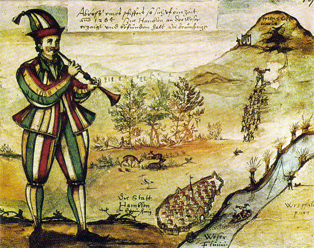
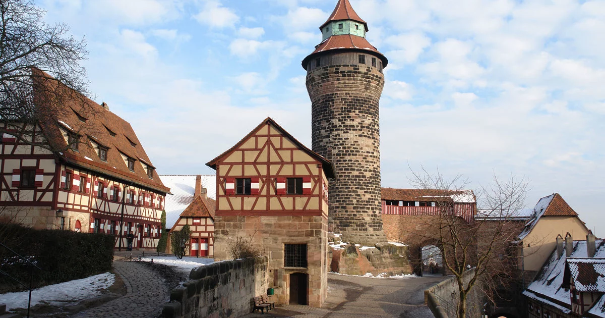
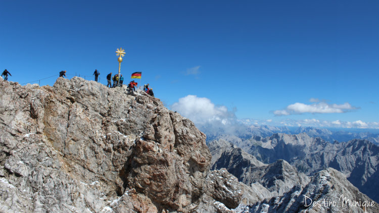

A Alemanha é um dos quatro maiores países da União Europeia. O País também é um dos mais bem colocados no índice de desenvolvimento humano (IDH), ocupando a 9a posição.
Um dos principais objetivos do Governo Federal alemão é criar boas condições de vida para todas as pessoas que moram lá, independentemente da nacionalidade. As boas condições de vida estão tanto para as pessoas que moram no campo (que trabalham com agricultura e pecuária), quanto para as que trabalham na cidade (que trabalham em escritórios, hospitais, entre outros). Dessa forma, é possível entender que imigrantes podem frequentar ambos os espaços, porém, o espaço na sociedade alemã ainda é algo a se conquistar.
Outro fator muito interessante é que eles prezam por uma alimentação saudável, rica em proteínas e carboidratos, principalmente nas épocas em que faz muito frio. Grande parte dos habitantes do país ainda mantém a tradição e comem as mesmas comidas que os povos antigos comiam.
No Brasil essa receita é conhecida como Chucrute. Em alemão “Sauerkraut” significa repolho azedo, o nome faz referência ao fato de que a receita é uma conserva de repolho fermentado.
Apesar de ser tipicamente alemão, o prato surgiu durante a construção da Grande Muralha da China, afinal, durante a época de verão os construtores consumiam majoritariamente arroz e repolho na maior parte das refeições. Durante o inverno, vinho de arroz era utilizado para preservar o repolho que azedava ou fermentava. O vegetal chegou até a Europa pelos Tártaros, e na Alemanha o vinho foi substituído por sal.
Na maior parte das vezes o repolho é acompanhado de costela de porco ou salsicha. O chucrute é consumido de diferentes formas em todo o mundo e, por conta de sua fermentação, é um parto que faz muito bem para a saúde.
Wurstsalat trata-se de um prato que leva salsicha e cebola temperada com azeite, vinagre, uma pitada de açúcar e cebolinha. Geralmente a salada é servida com uma fatia de pão, ou batatas, e pode ser servida como entrada ou lanche. A salada tem origem da Baviera, mas também é muito consumida em estados e países próximos.
Bratapfel é uma receita alemã e tipicamente natalina. A parte central da maçã é retirada (talo e sementes) e, o furo que é feito é coberto com uma mistura de manteiga, açúcar e amêndoas. No topo da maçã coloca-se um pedaço de canela em pau, a sobremesa é levada ao forno por 50 minutos e depois de pronta pode ser servida com sorvete.

A comemoração que inspirou a criação da Oktoberfest de Munique ocorreu em outubro de 1810, quando o rei bávaro Luís I casou-se com Tereza da Saxônia. Para comemorar o casamento foi organizada uma festa que durou uma semana, e contou com corrida de cavalos e uma festa pública. O evento fez tanto sucesso que ele continuou acontecendo ano após ano, e com a participação de outros estados da Confederação Germânica.
Atualmente a comemoração ocorre anualmente em Munique, geralmente em outubro e setembro. O evento geralmente começa em um sábado e se encerra em um domingo, marcando uma comemoração de 15 dias de duração. Em 2010, quando comemoram 200 anos de evento, Munique contou com 6,4 milhões de turistas durante o período da festa.
A festa é realizada em 14 quatorze pavilhões que são construídos e ficam entre as duas estações centrais do metrô de Munique.
O evento conta com comidas, bebidas (cerveja, na maior parte do tempo) e trajes típicos.
Anualmente acontece o Freimarkt em Bremen, um dos festivais mais antigos e tradicionais da Alemanha. Há registros que dizem que o evento começou a acontecer em 1035, quando os imperadores concediam privilégios e as pessoas comemoraram festivais religiosos.
Originalmente o festival surgiu como mercado de troca e venda de produtos que só podiam ser vendidos lá. A partir do século XV animais exóticos e figuras populares eram apresentadas. Nos dias de hoje ocorrem espetáculos de luzes e música. A festa também conta com cerveja e comidas típicas.
O Mercado aberto de Bremen comemora a identidade da cidade e a história do país.
A festividade ocorre anualmente no bairro de Kreuzberg, durante o feriado de Pentecostes. A festa conta com shows, desfiles e eventos gratuitos, que celebram diversas culturas.
Karneval der Kulturen (Carnaval das Culturas) é para todas as idades, onde os moradores e turistas podem vestir da forma como quiserem, representando seu país e cultura.
O festival se originou em XI, quando artistas de rua, artesãos e comerciantes criaram um mercado dentro e nos entornos da Catedral de Hamburgo.
O prédio original que as pessoas frequentavam já não existe mais, porém, a tradição se manteve e virou um grande festival, que atraiu mais de 4 milhões de pessoas em três estações: verão, primavera e inverno.
O festival conta com comidas típicas, brinquedos para todas as idades e, claro, a tradicional queima de fogos no final da festa.
A lenda de Loreley e o Vale do Reno tem como cenário o penhasco mais conhecido da Alemanha. Segundo a lenda, no topo do penhasco existe uma moça que canta enquanto as embarcações passam. E, por conta de sua voz, ela hipnotiza todos os tripulantes das embarcações que passam no rio Reno, fazendo com que os barcos batem no penhasco e afundam. Da mesma forma como Loreley nunca perdeu sua beleza, os alemães nunca esquecerá essa lenda que já existe há mais de dois ecus lo e, além disso, muitas pessoas que já foram de barco até regiões próximas dizem ter escutado o canto da moça.
A lenda de Rübezahl fala sobre um gigante que vive nas montanhas entre as terras de Boêmia e Silésia. Apesar de ser um gigante ele é bom, ajuda os visitantes ensinando sobre medicina e entregando presentes. Porém, depois de ser humilhado, torna-se vingativo. Com isso, Rübezahl passa a mandar raios, trovões, ventos, névoas e chuva para toda a montanha, estremecendo tudo ao seu redor quando caminha.
Existem algumas especulações sobre a criação de seu nome, mas, a mais famosa delas diz que uma vez o homem sequestrou uma princesa que gostava de nabos. Por ser muito solitária, ele transformava nabos em pessoas que ela gostava. Certa vez, enquanto o gigante contava os nabos para fazer a transformação, a princesa escapou. Por isso passou a ser conhecido como Rübezahl (Rübe = nabo e zahl = número).

A lenda tem seu primeiro registro no livro em que os irmãos Grimm escreveram. Ela conta a história de um flautista que foi contratado para “enfeitiçar” os ratos da cidade de Hamelin com sua canção. Ele cumpriu sua parte do acordo, porém, os moradores do local não pagaram por seus serviços. Então, o homem decidiu fazer com as ricas da cidade o mesmo que fizera com os ratos, os meninos e meninas nunca mais foram vistos.

O Castelo Imperial de Nuremberg foi construído antes do ano 1000. Ele foi feito sobre pedras de arenito, material que também faz parte de sua composição.
De 1050 a 1571 o local foi a casa dos imperadores , por isso tornou-se um dos marcos mais importantes da era medieval.
Atualmente toda a história sobre o edifício encontra-se dentro dele, com registros textuais e fotográficos. A capela é um dos cômodos mais belos do castelo, sendo muito dos visitantes que já passaram por lá.
Durante a segunda guerra mundial o castelo sofreu muito com bombardeios e, por isso, teve grande parte de sua estrutura original destruída. Porém, essas partes já foram reconstruídas seguindo os moldes do castelo original. Apenas a capela e a torre Sinnweltturm mantiveram-se intactas. Durante o inverno o ponto turístico fica fechado. A entrada é gratuita.
A Catedral de Colônia é uma das maiores catedrais católicas do mundo. Foi construída entre 1248 e 1880, a fim de abrigar o relicário dos três reis magos. A maravilha em forma de arquitetura conta com 157 metros de altura e é um dos pontos turísticos mais conhecidos de Colônia. Os vitrais presentes na catedral chamam bastante atenção, cinco deles foram presentes do rei da Baviera.
O relicário é coberto com ouro e pedras preciosas, acredita-se que ele guarda restos mortais dos três reis magos, e é um dos maiores do mundo ocidental. Muitas pessoas acreditam que a catedral é um exemplo de resistência, afinal, ela sobreviveu a guerra, bombardeios e, logicamente, aos efeitos do tempo.

O Castelo de Neuschwanstein é um dos pontos turísticos mais populares da alemanha, foi construído sob a ordem do Rei Louco, em uma época onde muralhas e castelos já não eram mais construídos e, dessa forma, inspirou até mesmo Walt Disney na construção do castelo da bela adormecida.
A principal proposta era construir algo mais voltado para estética do que para a funcionalidade, para a época em que foi construído (o projeto começou a tomar forma em 1869), contava com muitas modernidades, como: linha telefônica, água quente encanada e luz elétrica.
O castelo é a própria “personificação” dos sonhos do rei, que sempre quis viver em um mundo imaginário e cheio de magia. O espaço conta com 200 cômodos, entre eles: quartos, salões para festas, espaço para cantores, cozinha e uma capela exclusiva para o rei.

Zugspitze é a montanha mais alta da Alemanha, no ponto turístico é possível esquiar, fazer caminhas, avistar terras alemãs e austríacas. E, em dias claros e com boa visibilidade é possível ver parte da Itália e Suíça.
Para chegar até a montanha é preciso pegar um trem ou um trem e um teleférico, ambos os espaços contam com instalações modernas, por isso é possível levar 120 pessoas por vez, de forma confortável e leve.
Ao atingir o topo de 2962 metros de altura é possível encontrar restaurantes, um centro meteorológico e de pesquisa. Também existe uma pequena passarela, onde é possível atravessar e chegar a um território austriaco. Durante o inverno constroem um hotel de gelo, e é possível dormir por lá.

99 Luftballons é uma das músicas mais conhecidas da Alemanha, lançada em 1993 a canção faz uma crítica ao período da Guerra Fria e ao momento de tensão que dominava o mundo inteiro durante a guerra. A música é completamente de alemão e fala sobre um episódio fictício em que 99 balões vermelhos teriam sido lançados aos céus.
In Deinen Armen tem sido a última sensação alemã nos últimos tempos, a música retrata um episódio de desilusão amorosa e dor após um amor parar de ser correspondido da mesma forma. O clipe já alcançou mais de 15 milhões de visualizações.
Über den Wolken é considerado um clássico da cultura alemã. A letra da canção busca passar a ideia de que acima das nuvens, os problemas e as preocupações da vida cotidiana ficam para trás.